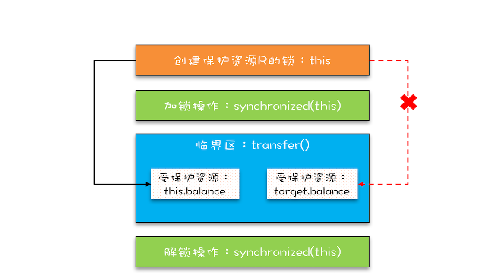
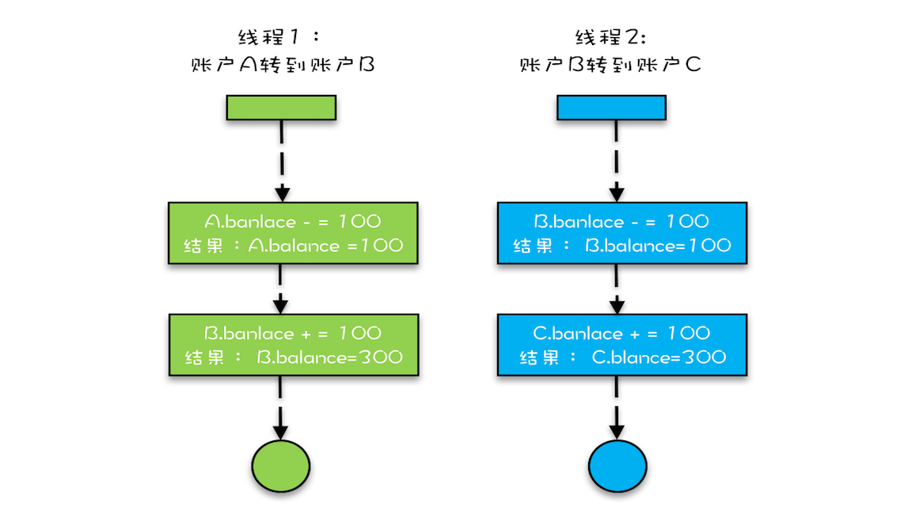
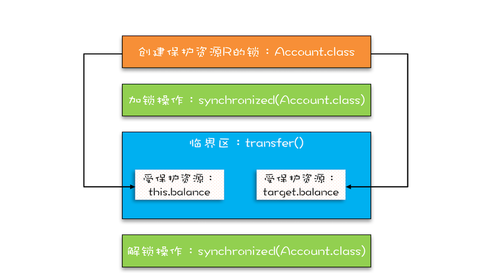

- 00 学习攻略 如何才能学好并发编程？.md.html
- 00 开篇词 你为什么需要学习并发编程？.md.html
- 01 可见性、原子性和有序性问题：并发编程Bug的源头.md.html
- 02 Java内存模型：看Java如何解决可见性和有序性问题.md.html
- 03 互斥锁（上）：解决原子性问题.md.html
- 04 互斥锁（下）：如何用一把锁保护多个资源？.md.html
- 05 一不小心就死锁了，怎么办？.md.html
- 06 用“等待-通知”机制优化循环等待.md.html
- 07 安全性、活跃性以及性能问题.md.html
- 08 管程：并发编程的万能钥匙.md.html
- 09 Java线程（上）：Java线程的生命周期.md.html
- 10 Java线程（中）：创建多少线程才是合适的？.md.html
- 11 Java线程（下）：为什么局部变量是线程安全的？.md.html
- 12 如何用面向对象思想写好并发程序？.md.html
- 13 理论基础模块热点问题答疑.md.html
- 14 Lock和Condition（上）：隐藏在并发包中的管程.md.html
- 15 Lock和Condition（下）：Dubbo如何用管程实现异步转同步？.md.html
- 16 Semaphore：如何快速实现一个限流器？.md.html
- 17 ReadWriteLock：如何快速实现一个完备的缓存？.md.html
- 18 StampedLock：有没有比读写锁更快的锁？.md.html
- 19 CountDownLatch和CyclicBarrier：如何让多线程步调一致？.md.html
- 20 并发容器：都有哪些“坑”需要我们填？.md.html
- 21 原子类：无锁工具类的典范.md.html
- 22 Executor与线程池：如何创建正确的线程池？.md.html
- 23 Future：如何用多线程实现最优的“烧水泡茶”程序？.md.html
- 24 CompletableFuture：异步编程没那么难.md.html
- 25 CompletionService：如何批量执行异步任务？.md.html
- 26 Fork_Join：单机版的MapReduce.md.html
- 27 并发工具类模块热点问题答疑.md.html
- 28 Immutability模式：如何利用不变性解决并发问题？.md.html
- 29 Copy-on-Write模式：不是延时策略的COW.md.html
- 3 个用户来信 打开一个新的并发世界.md.html
- 30 线程本地存储模式：没有共享，就没有伤害.md.html
- 31 Guarded Suspension模式：等待唤醒机制的规范实现.md.html
- 32 Balking模式：再谈线程安全的单例模式.md.html
- 33 Thread-Per-Message模式：最简单实用的分工方法.md.html
- 34 Worker Thread模式：如何避免重复创建线程？.md.html
- 35 两阶段终止模式：如何优雅地终止线程？.md.html
- 36 生产者-消费者模式：用流水线思想提高效率.md.html
- 37 设计模式模块热点问题答疑.md.html
- 38 案例分析（一）：高性能限流器Guava RateLimiter.md.html
- 39 案例分析（二）：高性能网络应用框架Netty.md.html
- 40 案例分析（三）：高性能队列Disruptor.md.html
- 41 案例分析（四）：高性能数据库连接池HiKariCP.md.html
- 42 Actor模型：面向对象原生的并发模型.md.html
- 43 软件事务内存：借鉴数据库的并发经验.md.html
- 44 协程：更轻量级的线程.md.html
- 45 CSP模型：Golang的主力队员.md.html
- 用户来信 真好，面试考到这些并发编程，我都答对了！.md.html
- 结束语 十年之后，初心依旧.md.html
- 捐赠
04 互斥锁（下）：如何用一把锁保护多个资源？
在上一篇文章中，我们提到受保护资源和锁之间合理的关联关系应该是N:1的关系，也就是说可以用一把锁来保护多个资源，但是不能用多把锁来保护一个资源，并且结合文中示例，我们也重点强调了“不能用多把锁来保护一个资源”这个问题。而至于如何保护多个资源，我们今天就来聊聊。
当我们要保护多个资源时，首先要区分这些资源是否存在关联关系。
保护没有关联关系的多个资源
在现实世界里，球场的座位和电影院的座位就是没有关联关系的，这种场景非常容易解决，那就是球赛有球赛的门票，电影院有电影院的门票，各自管理各自的。
同样这对应到编程领域，也很容易解决。例如，银行业务中有针对账户余额（余额是一种资源）的取款操作，也有针对账户密码（密码也是一种资源）的更改操作，我们可以为账户余额和账户密码分配不同的锁来解决并发问题，这个还是很简单的。
相关的示例代码如下，账户类Account有两个成员变量，分别是账户余额balance和账户密码password。取款withdraw()和查看余额getBalance()操作会访问账户余额balance，我们创建一个final对象balLock作为锁（类比球赛门票）；而更改密码updatePassword()和查看密码getPassword()操作会修改账户密码password，我们创建一个final对象pwLock作为锁（类比电影票）。不同的资源用不同的锁保护，各自管各自的，很简单。
class Account {
// 锁：保护账户余额
private final Object balLock
= new Object();
// 账户余额
private Integer balance;
// 锁：保护账户密码
private final Object pwLock
= new Object();
// 账户密码
private String password;
// 取款
void withdraw(Integer amt) {
synchronized(balLock) {
if (this.balance > amt){
this.balance -= amt;
}
}
}
// 查看余额
Integer getBalance() {
synchronized(balLock) {
return balance;
}
}
// 更改密码
void updatePassword(String pw){
synchronized(pwLock) {
this.password = pw;
}
}
// 查看密码
String getPassword() {
synchronized(pwLock) {
return password;
}
}
}
当然，我们也可以用一把互斥锁来保护多个资源，例如我们可以用this这一把锁来管理账户类里所有的资源：账户余额和用户密码。具体实现很简单，示例程序中所有的方法都增加同步关键字synchronized就可以了，这里我就不一一展示了。
但是用一把锁有个问题，就是性能太差，会导致取款、查看余额、修改密码、查看密码这四个操作都是串行的。而我们用两把锁，取款和修改密码是可以并行的。用不同的锁对受保护资源进行精细化管理，能够提升性能。这种锁还有个名字，叫细粒度锁。
保护有关联关系的多个资源
如果多个资源是有关联关系的，那这个问题就有点复杂了。例如银行业务里面的转账操作，账户A减少100元，账户B增加100元。这两个账户就是有关联关系的。那对于像转账这种有关联关系的操作，我们应该怎么去解决呢？先把这个问题代码化。我们声明了个账户类：Account，该类有一个成员变量余额：balance，还有一个用于转账的方法：transfer()，然后怎么保证转账操作transfer()没有并发问题呢？
class Account {
private int balance;
// 转账
void transfer(
Account target, int amt){
if (this.balance > amt) {
this.balance -= amt;
target.balance += amt;
}
}
}
相信你的直觉会告诉你这样的解决方案：用户synchronized关键字修饰一下transfer()方法就可以了，于是你很快就完成了相关的代码，如下所示。
class Account {
private int balance;
// 转账
synchronized void transfer(
Account target, int amt){
if (this.balance > amt) {
this.balance -= amt;
target.balance += amt;
}
}
}
在这段代码中，临界区内有两个资源，分别是转出账户的余额this.balance和转入账户的余额target.balance，并且用的是一把锁this，符合我们前面提到的，多个资源可以用一把锁来保护，这看上去完全正确呀。真的是这样吗？可惜，这个方案仅仅是看似正确，为什么呢？
问题就出在this这把锁上，this这把锁可以保护自己的余额this.balance，却保护不了别人的余额target.balance，就像你不能用自家的锁来保护别人家的资产，也不能用自己的票来保护别人的座位一样。

用锁this保护this.balance和target.balance的示意图
下面我们具体分析一下，假设有A、B、C三个账户，余额都是200元，我们用两个线程分别执行两个转账操作：账户A转给账户B 100 元，账户B转给账户C 100 元，最后我们期望的结果应该是账户A的余额是100元，账户B的余额是200元， 账户C的余额是300元。
我们假设线程1执行账户A转账户B的操作，线程2执行账户B转账户C的操作。这两个线程分别在两颗CPU上同时执行，那它们是互斥的吗？我们期望是，但实际上并不是。因为线程1锁定的是账户A的实例（A.this），而线程2锁定的是账户B的实例（B.this），所以这两个线程可以同时进入临界区transfer()。同时进入临界区的结果是什么呢？线程1和线程2都会读到账户B的余额为200，导致最终账户B的余额可能是300（线程1后于线程2写B.balance，线程2写的B.balance值被线程1覆盖），可能是100（线程1先于线程2写B.balance，线程1写的B.balance值被线程2覆盖），就是不可能是200。

并发转账示意图
使用锁的正确姿势
在上一篇文章中，我们提到用同一把锁来保护多个资源，也就是现实世界的“包场”，那在编程领域应该怎么“包场”呢？很简单，只要我们的锁能覆盖所有受保护资源就可以了。在上面的例子中，this是对象级别的锁，所以A对象和B对象都有自己的锁，如何让A对象和B对象共享一把锁呢？
稍微开动脑筋，你会发现其实方案还挺多的，比如可以让所有对象都持有一个唯一性的对象，这个对象在创建Account时传入。方案有了，完成代码就简单了。示例代码如下，我们把Account默认构造函数变为private，同时增加一个带Object lock参数的构造函数，创建Account对象时，传入相同的lock，这样所有的Account对象都会共享这个lock了。
class Account {
private Object lock；
private int balance;
private Account();
// 创建Account时传入同一个lock对象
public Account(Object lock) {
this.lock = lock;
}
// 转账
void transfer(Account target, int amt){
// 此处检查所有对象共享的锁
synchronized(lock) {
if (this.balance > amt) {
this.balance -= amt;
target.balance += amt;
}
}
}
}
这个办法确实能解决问题，但是有点小瑕疵，它要求在创建Account对象的时候必须传入同一个对象，如果创建Account对象时，传入的lock不是同一个对象，那可就惨了，会出现锁自家门来保护他家资产的荒唐事。在真实的项目场景中，创建Account对象的代码很可能分散在多个工程中，传入共享的lock真的很难。
所以，上面的方案缺乏实践的可行性，我们需要更好的方案。还真有，就是用Account.class作为共享的锁。Account.class是所有Account对象共享的，而且这个对象是Java虚拟机在加载Account类的时候创建的，所以我们不用担心它的唯一性。使用Account.class作为共享的锁，我们就无需在创建Account对象时传入了，代码更简单。
class Account {
private int balance;
// 转账
void transfer(Account target, int amt){
synchronized(Account.class) {
if (this.balance > amt) {
this.balance -= amt;
target.balance += amt;
}
}
}
}
下面这幅图很直观地展示了我们是如何使用共享的锁Account.class来保护不同对象的临界区的。

总结
相信你看完这篇文章后，对如何保护多个资源已经很有心得了，关键是要分析多个资源之间的关系。如果资源之间没有关系，很好处理，每个资源一把锁就可以了。如果资源之间有关联关系，就要选择一个粒度更大的锁，这个锁应该能够覆盖所有相关的资源。除此之外，还要梳理出有哪些访问路径，所有的访问路径都要设置合适的锁，这个过程可以类比一下门票管理。
我们再引申一下上面提到的关联关系，关联关系如果用更具体、更专业的语言来描述的话，其实是一种“原子性”特征，在前面的文章中，我们提到的原子性，主要是面向CPU指令的，转账操作的原子性则是属于是面向高级语言的，不过它们本质上是一样的。
“原子性”的本质是什么？其实不是不可分割，不可分割只是外在表现，其本质是多个资源间有一致性的要求，操作的中间状态对外不可见。例如，在32位的机器上写long型变量有中间状态（只写了64位中的32位），在银行转账的操作中也有中间状态（账户A减少了100，账户B还没来得及发生变化）。所以解决原子性问题，是要保证中间状态对外不可见。
课后思考
在第一个示例程序里，我们用了两把不同的锁来分别保护账户余额、账户密码，创建锁的时候，我们用的是：private final Object xxxLock = new Object();，如果账户余额用 this.balance 作为互斥锁，账户密码用this.password作为互斥锁，你觉得是否可以呢？
欢迎在留言区与我分享你的想法，也欢迎你在留言区记录你的思考过程。感谢阅读，如果你觉得这篇文章对你有帮助的话，也欢迎把它分享给更多的朋友。
© 2019 - 2023 Liangliang Lee. Powered by gin and hexo-theme-book.